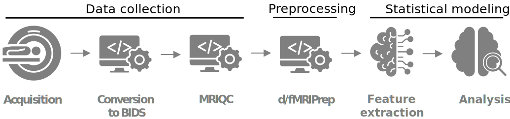
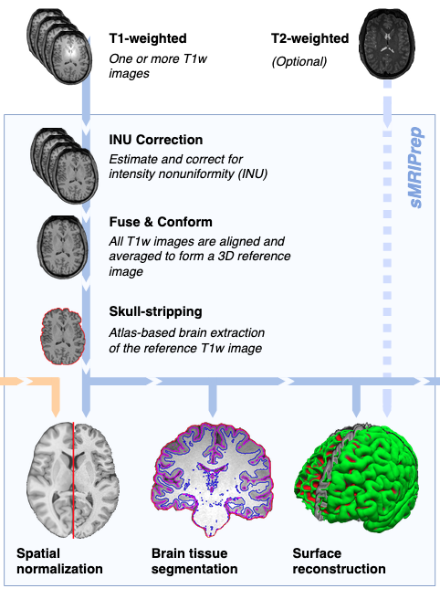
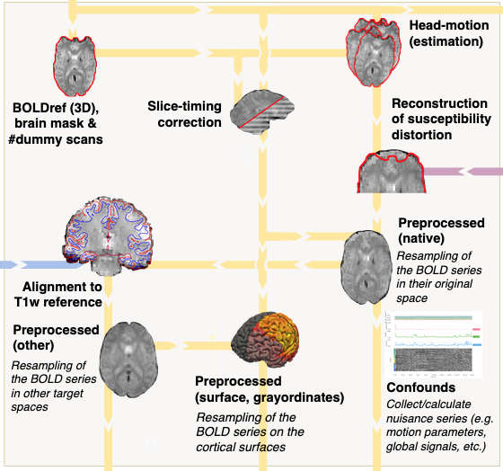
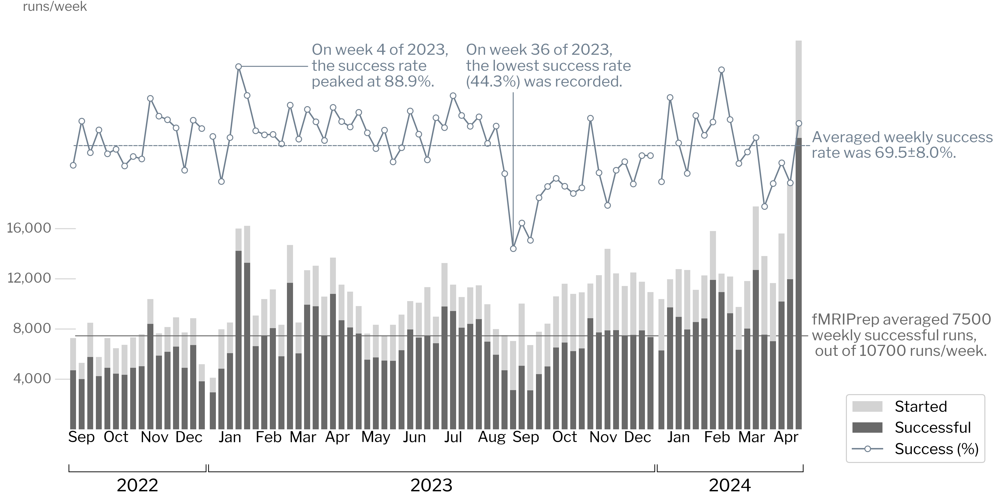

name: title layout: true class: center --- layout: false count: false .center[ <a href="https://www.nipreps.org/assets/fmriprep-bootcamp-geneva2024/day1-01-fmriprep-primer/"> <img src="images/qr-talk-url.svg" alt="workflow" style="width: 20%" /> <br /> https://www.nipreps.org/assets/fmriprep-bootcamp-geneva2024/day1-01-fmriprep-primer/ </a> <br /> <br /> ## Overview of the fMRI neuroimaging pipeline & *fMRIPrep* Chris Markiewicz <<code>markiewicz@stanford.edu</code>> Oscar Esteban <<code>phd@oscaresteban.es</code>> ] ??? NOTES TO OURSELVES GO HERE --- name: newsection layout: true .perma-sidebar[ <p class="rotate"> <a rel="license" href="http://creativecommons.org/licenses/by/4.0/"><img alt="Creative Commons License" style="border-width:0; height: 20px; padding-top: 6px;" src="https://i.creativecommons.org/l/by/4.0/88x31.png" /></a> <span style="padding-left: 10px; font-weight: 600;">Day 1 :: Introduction</span> </p> ] --- # Outlook .right-column3.center[ <a href="https://www.nipreps.org/assets/fmriprep-bootcamp-geneva2024/day1-01-fmriprep-primer/"> <img src="images/qr-talk-url.svg" alt="workflow" style="width: 100%" /> <br /> https://www.nipreps.org/assets/fmriprep-bootcamp-geneva2024/day1-01-fmriprep-primer/ </a> ] .left-column3.larger[ <br /> * Overview of the neuroimaging pipeline structure * Why do data require preprocessing? * *fMRIPrep* * Introduction * Design and requirements * Community * Continuous validation * *NiPreps* ] ??? --- # The neuroimaging worflow <br /> <br /> .boxed-content[  .center[ [Esteban et al., (2020)](http://doi.org/10.1038/s41596-020-0327-3); [Niso et al., (2022)](https://doi.org/10.1016/j.neuroimage.2022.119623) ] ] ??? The selling points are: - Data collection and organization is mostly data management. It's true sequences improve over time and that demands updates in the data management workflow (e.g., BIDS conversion), but you can get a very stable solution here (esp. if you use things like ReproIn and datalad) and standardization has been implemented (following different approaches and standards at each institution, true). - Statistical modeling requires some flexibility to come up with new and better models, so you may allow some analytical variability not to styme progress. - Preprocessing is the step in between, where standardization can (i) give you as an individual researcher a solid ground for this and future studies; (ii) make your study more comparable to others who standardize the same way. WDYT? --- # Why do data require preprocessing? .boxed-content[ <br /> .large.center[ <i class="fa-solid fa-circle-exclamation"></i> MRI measurements *generally* **cannot** be directly analyzed. <i class="fa-solid fa-circle-exclamation"></i> ] <br /> .pull-left[ .center.larger[<i class="fa-solid fa-map-pin"></i> **Spatiotemporal location**] signal drawn from the same location and accurate time at all time points, sampled consistently with the analysis' design (e.g., surface, volume) ] .pull-right[ .center.larger[<i class="fa-solid fa-location-crosshairs"></i> **Signal *validity***] extraction of confounds, identification/accounting for artifacts, spatiotemporal filtering for denoising, etc. ] <br /> .boxed-bottom.large.center[ **End goal**: minimize false positives without increasing false negatives ] ] --- # Why do data require preprocessing? .boxed-content[ <br /> <br /> .large[ All analyses require consistency and accuracy in **spatiotemporal location**. ] <br /> .larger[ <i class="fa-solid fa-circle-right"></i> **within runs** (head-motion, slice-timing), <i class="fa-solid fa-circle-right"></i> **within individuals** (coregistration between runs, coregistration with anatomy [T1w images, surfaces, etc.], susceptibility distortion), and <i class="fa-solid fa-circle-right"></i> **across subjects** (spatial normalization) ] ] --- ## Example: susceptibility distortion <p align="center"> <img src="images/sdc-the-problem.svg" width="80%" /><br /> </p> --- # Why do data require preprocessing? <br /> .boxed-content[ .large[ All analyses must consider confounders and covariates that undermine the **validity** of the measurements. ] .larger[ * confounders such as global signals, signal drifts, DVARS, etc. * spatiotemporal filtering to increase SNR, * known artifacts such as head-motion parameters and derivations, etc. ] <br /> .boxed-bottom.large[ **Minimal preprocessing**: .gray-text[*fMRIPrep* is *conservative* in that it will not regress out signals or apply intended smoothing kernels] ] ] --- <br /> <br /> <br /> <br /> <br /> <br /> .boxed-content[ .large.center[ # Processing and reproducibility ] .larger.center.gray-text[How do they interact? Why *fMRIPrep*? ]] --- .center[ <img src="images/reproducible-definition-grid.svg" alt="HPC" style="width: 68%" /> .small[ *The Turing Way project* illustration by Scriberia. Used under a CC-BY 4.0 licence. doi:<a href="https://doi.org/10.5281/zenodo.3332807">10.5281/zenodo.3332807</a>.] ] --- # Reproducibility: increasing measurements' reliability <br /> .large[ <i class="fa-solid fa-circle-right"></i> Repeat the measurement .gray-text[Random errors cancel out] <i class="fa-solid fa-circle-right"></i> Standardize the measurement procedure .gray-text[Reduce methodology variance (potentially at the cost of bias)] ] <br /> .center.large[ Both strategies *reduce the variance* of the measurement. Neither ensures the *validity* of the measurement] --- # Preprocessing & Reproducibility .boxed-content[ .large[ The reproducibility of preprocessing sets bounds to the reproducibility of downstream analyses. ] .larger[ * NARPS ([Botvinik-Nezer et al., 2020](https://doi.org/10.1038/s41586-020-2314-9)): single dataset, 70 teams, 9 <i>ex-ante</i> hypotheses. <i class="fa-solid fa-circle-right"></i> Striking analytical variability (even with teams using same preprocessing) * [Li et al., (2024)](https://doi.org/10.1038/s41562-024-01942-4): single test-retest dataset, 5 pipelines <i class="fa-solid fa-circle-right"></i> Moderate inter-pipeline agreement, limiting cross-study <s>reproducibility</s> [replicability] ] ] --- # Preprocessing & Reproducibility .boxed-content[ <br /> <br /> .large[ Beyond analytical variability, other sources of variability are on the way: ] .larger[ * Random seeds <i class="fa-solid fa-circle-right"></i> Keep track (*do not fix*) and report. * [Chatelain et al., (2023)](https://doi.org/10.48550/arXiv.2307.01373): Random rounding of floating-point calculations. <i class="fa-solid fa-circle-right"></i> Uncovered substantial changes between patch-releases of *fMRIPrep* ] ] --- # fMRIPrep: bird's eye picture .boxed-content.center[ <br /> <br /> <img src="https://github.com/oesteban/fmriprep/raw/f4c7a9804be26c912b24ef4dccba54bdd72fa1fd/docs/_static/fmriprep-21.0.0.svg" width="100%" /> ] --- .pull-left.center[  ] .pull-right[ # Anatomical processing .large[ Delivered within *sMRIPrep* ] .larger[ <i class="fa-solid fa-circle-right"></i> Denoising <i class="fa-solid fa-circle-right"></i> INU correction <i class="fa-solid fa-circle-right"></i> Averaging (multi-session) <i class="fa-solid fa-circle-right"></i> Brain extraction <i class="fa-solid fa-circle-right"></i> Spatial normalization <i class="fa-solid fa-circle-right"></i> Brain tissue segmentation <i class="fa-solid fa-circle-right"></i> Surface reconstruction ] ] --- .pull-left.center[ <br /> <br />  ] .pull-right[ # Functional processing .larger[ <i class="fa-solid fa-circle-right"></i> Reference volume <i class="fa-solid fa-circle-right"></i> Slice-timing (optional) <i class="fa-solid fa-circle-right"></i> Head-motion (estimation) <i class="fa-solid fa-circle-right"></i> Susceptibility distortion (estimation) <i class="fa-solid fa-circle-right"></i> Co-registration with anatomical T1w <i class="fa-solid fa-circle-right"></i> Resampling into specific spaces <i class="fa-solid fa-circle-right"></i> Confound collection ] ] --- # *TemplateFlow* .boxed-content.center[ <img src="https://www.templateflow.org/assets/templateflow_fig-birdsview.png" width="70%" /><br /> (<a href="https://doi.org/10.1038/s41592-022-01681-2">Ciric et al., 2022</a>) ] --- # *SDCFlows* .boxed-content[ .large[ SDC <i class="fa-solid fa-circle-right"></i> Susceptibility-derived Distortion Correction ] <br /> .larger[ *SDCFlows* "caters" preprocessed fieldmap estimations for *fMRIPrep* to reconstruct the nonlinear displacements field to revert geometrical distortion. ] .center[<img src="images/sdc-the-problem.svg" width="40%" />] ] --- # fMRIPrep's design .boxed-content[ .large[<i class="fa-solid fa-circle-right"></i> Robust & adaptive fMRI preprocessing] .larger[ * Minimalist requirements (T1w + BOLD run) * Will utilize additional scans (T2w/FLAIR, field maps) when available * Capable of preprocessing multi-echo BOLD. ] .large[<i class="fa-solid fa-circle-right"></i> Cross-suite tooling] .larger[ * Select tools from each suite according to strengths * Use *Nipype* to abstract from tool details and construct modular workflows ] .large[<i class="fa-solid fa-circle-right"></i> Standardization and best-practices — [check (Esteban, 2024)](https://doi.org/10.31219/osf.io/42bsu)] .larger[ * BIDS (inputs), BIDS Derivatives (outputs), BIDS Apps (architecture). * Containers, versioning, LTS, open-source, CI/CD, etc. * Visual reports ] ] --- # fMRIPrep's constrains and limitations .boxed-content[ .large[<i class="fa-solid fa-circle-right"></i> Agnostic to downstream analysis] .larger[ * Minimalist processing that refrains from applying analysis-specific steps. ] .large[<i class="fa-solid fa-circle-right"></i> Cross-sectional studies] .larger[ * *fMRIPrep* assumes individuals' anatomy does not change * Today, execution can be *hacked* but a *longitudinal mode* does not exist yet. ] .large[<i class="fa-solid fa-circle-right"></i> Driven by the 80/20 principle] .larger[ * 7T data fell on the 20 side (although that's about to change) ] ] --- # Standardization in the research workflow .boxed-content[ <br /> .center[ ] <br /> .larger[ Data collection <i class="fa-solid fa-circle-right"></i> easy to standardize (BIDS, scanners' software) Statistical modeling <i class="fa-solid fa-circle-right"></i> keep analytical flexibility not to stifle the development of new ideas Preprocessing <i class="fa-solid fa-circle-right"></i> offers an **opportunity** to reduce analytical flexibility and **enable** cross-study comparisons ] ] --- # Standardizing preprocessing: visual reports .boxed-content[ <iframe src="https://fmriprep.s3.amazonaws.com/bootcamp-geneva-2024/sub-15.html" width="100%" height="540px" style="border: 0; margin-top: 15px" /> ] --- # Standardizing preprocessing: community building .large[fMRI practitioners have massively adopted *fMRIPrep* globally:] <p align="center"> <br /> </p> --- # Standardizing preprocessing: community building <p align="center"> <br /> </p> .large.center[<i class="fa-solid fa-circle-right"></i> which has permitted the creation of a large community.] --- # Building a community was important to *fMRIPrep* .boxed-content.large[ .no-bullet[ * <i class="fa-solid fa-comments"></i> Feedback & support: * error & bug reports <i class="fa-solid fa-bug" style="color: #ff4c26;"></i> help development, * feature requests <i class="fa-solid fa-lightbulb" style="color: #00bc07;"></i> help driving a roadmap, * questions <i class="fa-solid fa-circle-question"></i> are the entry point to deliver support * [<i class="fa-solid fa-bullhorn"></i> NeuroStars.org](https://neurostars.org) * <i class="fa-solid fa-user-plus"></i> Engage contributors (see [our guidelines](https://www.nipreps.org/community/CONTRIBUTING/)): * documentation, assistance debugging, code patches, everything counts! * <i class="fa-solid fa-globe"></i> Reach out, increase user-base. ] ] --- # Standardizing preprocessing: software versions .larger[ <i class="fa-solid fa-circle-right"></i> It's critical to report **exact versions** <i class="fa-solid fa-circle-right"></i> Semantics inform about compatibility: **24.0.1** <i class="fa-solid fa-circle-right"></i> Long-term support (LTS) program. ] <p align="center"> <img src="../../20240502_versionstream.png" width="85%" /><br /> </p> --- # Standardizing preprocessing: validation --- <p align="center"> <img src="../../nipreps-chart.png" width="63%" /><br /> <em>NiPreps</em> (<a href="https://doi.org/10.31219/osf.io/ujxp6">Esteban et al., 2020</a>) </p> --- # *NiPreps* produce *analysis-grade* data .boxed-content[ <br /> .larger.center[ "*analysis-grade*" data <i class="fa-solid fa-circle-right"></i> data **directly consumable by analyses** ] .pull-left[ <br /> <br /> *Analysis-grade* data is an analogy to the concept of "*sushi-grade (or [sashimi-grade](https://en.wikipedia.org/wiki/Sashimi)) fish*" in that both are: .large[<i class="fa-solid fa-circle-right"></i> **minimally preprocessed**,] and .large[<i class="fa-solid fa-circle-right"></i> **safe to consume** directly.] ] .pull-right.center[ <img src="../../nipreps-transparent.png" width="100%" /> <a href="https://www.nipreps.org"><img src="images/qr-nipreps-url.svg" width="40%" /><br /> www.nipreps.org</a> ] ] ??? --- ## Conclusion .boxed-content[ .distribute.large[ <i class="fa-solid fa-circle-right"></i> fMRI's research workflow is complex <i class="fa-solid fa-circle-right"></i> Preprocessing is an area with standardization potential ] ] ??? --- layout: false count: false .center[ <a href="https://www.nipreps.org/assets/fmriprep-bootcamp-geneva2024/day1-01-fmriprep-primer/"><img src="images/qr-talk-url.svg" alt="workflow" style="width: 20%" /></a> ## Thanks <br /> <br /> #### Chris Markiewicz <<code>markiewicz@stanford.edu</code>> & Oscar Esteban <<code>phd@oscaresteban.es</code>> Overview of the fMRI neuroimaging pipeline & *fMRIPrep* Funding: [SNSF 185872](https://data.snf.ch/grants/grant/185872), [RF1MH121867](https://reporter.nih.gov/project-details/10260312), [CZI EOSS5-000266](https://chanzuckerberg.com/eoss/proposals/nipreps-a-community-framework-for-reproducible-neuroimaging/) ] ???